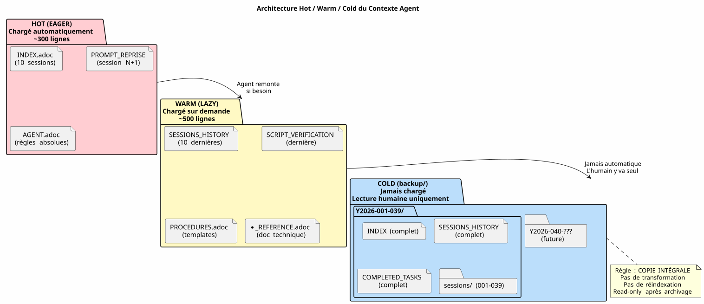
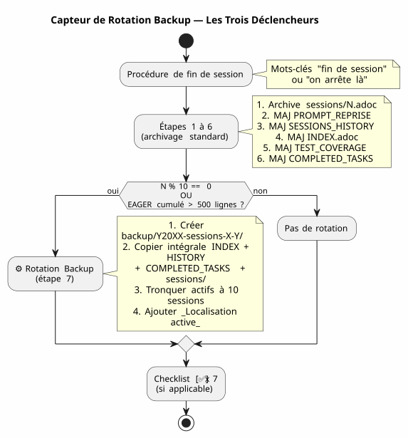
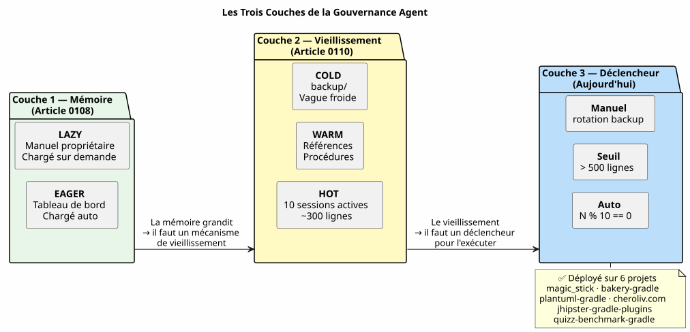

Sliding Window et Vague Froide : Quand le Contexte Agent Explose et qu'il Faut Archiver sans Perdre
Publié le 26 April 2026
Résumé
Après 48 sessions sur un seul projet et 150+ au total, le système de gouvernance Eager/Lazy que j’avais construit avec soin commençait à s’étouffer. Les fichiers agents, censés être légers, pesaient 5200 lignes cumulées. Le contexte auto-chargé montait plus vite que ma capacité à le contrôler. Cet article raconte comment j’ai conceptualisé un mécanisme de backup — entre sliding window et vague froide identique — pour maintenir un contexte actif léger sans jamais rien perdre.
1. Le Signal : 5200 Lignes
Je suis en pleine session 048 sur magic_stick, mon projet de build d’ISO Linux live. Opencode me regarde. Comme toujours, il a chargé automatiquement mes fichiers Eager en début de session — AGENT.adoc, PROMPT_REPRISE.adoc, .agents/INDEX.adoc. Rien d’anormal.
Sauf que quelque chose cloche. Les réponses sont plus lentes. Le raisonnement est plus dilué. L’agent oublie des détails qu’il avait sous les yeux il y a deux messages.
J’ouvre un terminal et je tape :
wc -l .agents/INDEX.adoc .agents/SESSIONS_HISTORY.adoc \
.agents/archives/COMPLETED_TASKS_ARCHIVE_2026-04.adoc260 lignes pour INDEX. 55 pour SESSIONS_HISTORY. 1756 pour COMPLETED_TASKS_ARCHIVE.
Le dossier sessions/ ajoute encore ~3200 lignes. Total : 5200 lignes de contexte qui se chargent, d’une manière ou d’une autre, dans le cerveau temporaire de l’agent.
La stratégie Eager/Lazy que j’avais théorisée à l’article précédent fonctionne — mais elle a un défaut de naissance que je n’avais pas anticipé : elle n’a pas de mécanisme de vieillissement. Chaque session ajoute une ligne à INDEX, un paragraphe à COMPLETED_TASKS, un fichier dans sessions/. Rien ne sort jamais. Le contexte est une boule de neige qui grossit à chaque nouvelle session.

Ce n’est pas un bug, c’est une conséquence directe de la procédure de fin de session qui archive méticuleusement chaque détail. Le système est victime de son propre succès.
2. Le Diagnostic : Triple Redondance
Je demande à l’agent de diagnostiquer le problème. Sa réponse est immédiate et chirurgicale.
Fichier |
Lignes |
Rôle |
Problème |
|
260+ |
EAGER (chargé auto) |
Table de toutes les sessions depuis la 001 — +1 ligne par session |
|
55 |
EAGER |
Table récapitulative — redondance avec INDEX |
|
1756 |
EAGER (implicite) |
Détails complets de toutes les sessions d’avril |
|
~5200 total |
LAZY (supposé) |
Archives individuelles, mais pas utilisées car tout est déjà dans COMPLETED_TASKS |
L’agent identifie quatre causes racines :
-
COMPLETED_TASKS_ARCHIVE absorbe tout — Au lieu de pointer vers les archives
.sessions/, il recopie intégralement chaque session. -
INDEX.adoc fait office d’historique complet — Le tableau "Sessions Récentes" contient 30+ entrées.
-
SESSIONS_HISTORY.adoc redondant — Même info que INDEX, format différent.
-
La règle LAZY n’est pas respectée — COMPLETED_TASKS est implicitement EAGER car il contient tout.
Sa proposition est radicale : limiter INDEX à 10 sessions, vider COMPLETED_TASKS, déplacer SESSIONS_HISTORY en LAZY pur. Gain immédiat : ~1900 lignes économisées.
C’est propre, efficace, logique. Mais j’ai un problème avec cette approche.
3. Pourquoi J’ai Refusé la Solution Évidente
La solution de l’agent est celle d’un ingénieur qui optimise un cache. Limiter. Tronquer. Supprimer les redondances.
Mais ces "redondances" n’en sont pas. Chaque fichier de gouvernance capture un angle différent sur la même réalité :
-
INDEX = vue macro, tableau de bord exécutif
-
SESSIONS_HISTORY = table chronologique linéaire, scorée
-
COMPLETED_TASKS_ARCHIVE = narrative détaillée avec métriques
-
sessions/*.adoc = archives individuelles, contexte complet
Ce n’est pas de la duplication bête. C’est de la perspective multiple structurée. C’est exactement ce dont on a besoin pour distiller — pour que plus tard, un humain (ou un futur LLM mieux entraîné) puisse croiser les angles et extraire des patterns.
Imaginez un data scientist qui vous dit : « Supprimons 3 colonnes sur 6, elles sont corrélées. » Vous lui répondez quoi ? Que la corrélation n’est pas de la redondance quand chaque colonne capture une dimension différente du même phénomène. Que c’est précisément cette richesse dimensionnelle qui rend le dataset exploitable.
C’est mon intuition. Et je la défends contre la rationalité froide de l’agent.
Je ne vois pas de fourre-tout silencieux dans mon idée. On ne fourre pas tout, on déplace le résultat structuré de la procédure de fin de session — chaque fichier avec son angle, ses redondances qui sont en réalité un enrichissement. C’est ce matériel multidimensionnel qui sera meilleur pour la distillation.
L’agent accuse le coup. Et se corrige.
4. La Proposition : Vague Froide Identique
L’agent propose alors un mécanisme plus fin, qui respecte mon intuition de dataset riche tout en résolvant le problème technique du contexte qui explose.
Le principe est simple et s’inspire directement du pattern Hot/Warm/Cold Storage appliqué à la gestion d’archives :
-
Hot (EAGER) = les 10 dernières sessions dans INDEX, PROMPT_REPRISE de la session N+1, les 2 derniers fichiers de session
-
Warm (LAZY) = SESSIONS_HISTORY récent, SCRIPT_VERIFICATION, toute la documentation de référence
-
Cold (backup/) = tout le reste, déplacé intact, sans transformation, sans réindexation
.agents/
├── INDEX.adoc → Sessions N-9 à N (10 dernières)
├── SESSIONS_HISTORY.adoc → Sessions N-9 à N
├── SCRIPT_VERIFICATION.adoc → Dernière vérif (pas d'historique)
├── PROMPT_REPRISE.adoc → Session N+1 uniquement
├── sessions/ → Sessions N-1 à N uniquement
└── backup/
└── Y2026-sessions-001-039/ ← Vague froide, COPIE INTÉGRALE
├── INDEX.adoc → Sessions 001 à 039 (complet)
├── SESSIONS_HISTORY.adoc → Sessions 001 à 039 (complet)
├── COMPLETED_TASKS_ARCHIVE.adoc → Sessions 001 à 039 (complet)
└── sessions/ → 001.adoc, 002.adoc...La clé du mécanisme : le backup n’est pas un index central, c’est une copie conforme de la vague passée. Quand on dépasse l’horizon des 10 sessions actives, on ne supprime rien. On ne réindexe rien. On ne fusionne rien. On prend le paquet de fichiers agents tel qu’il était à la session N-10, et on le déplace dans backup/.
Les fichiers actifs, eux, sont tronqués : * INDEX : uniquement les 10 dernières lignes (sliding window) * SESSIONS_HISTORY : idem * COMPLETED_TASKS_ARCHIVE : nouveau fichier pour la période en cours * sessions/ : uniquement les 2 dernières sessions

Le gain immédiat est massif : le contexte EAGER passe de ~5200 lignes à ~300 lignes. Une division par 17. Sans avoir perdu une seule ligne de données historiques.
5. Pourquoi Ce N’est Pas un Fourre-Tout
L’agent, dans sa première itération, craignait que backup/ devienne une boîte noire — un dossier où l’on jette des fichiers qu’on ne relira jamais. C’est une peur légitime. Mais elle repose sur une confusion.
Un fourre-tout, c’est quand on jette des fichiers sans structure, sans convention, sans logique de regroupement. Ici, le backup est structuré par période (Y2026-001-039), et chaque dossier de backup contient la même structure que le dossier .agents/ actif : INDEX, SESSIONS_HISTORY, COMPLETED_TASKS_ARCHIVE, sessions/.
Ce n’est pas un fourre-tout. C’est un snapshot horodaté. On pourrait même dire que c’est un mécanisme de versioning simplifié — à ceci près qu’il ne versionne pas les fichiers individuellement, mais le paquet complet de la gouvernance à un instant T.
Quand vous voulez retrouver une information ancienne, vous n’avez pas besoin d’un index central. Vous avez deux options :
-
grepciblé :grep -r "zsh" backup/Y2026-001-039/— et vous trouvez tout ce qui mentionne zsh dans la période, quel que soit l’angle (INDEX, SESSIONS_HISTORY, archive de session). -
Réintégration manuelle : vous copiez temporairement le dossier de backup dans le contexte actif, et vous demandez à l’agent d’analyser cette période spécifique.
L’index est implicite. Il est dans la structure même des fichiers — chacun étant déjà un index depuis son propre angle.
6. La Méthaphore des Étagères
Pour rendre le mécanisme intuitif, je l’ai conceptualisé en trois étagères :
-
Étagère 1 (EAGER) — le plan de travail. Ce dont j’ai besoin maintenant. INDEX récent, PROMPT_REPRISE, règles absolues. Léger, immédiat, critique.
-
Étagère 2 (LAZY) — la bibliothèque de consultation. Ce que je peux aller chercher sur demande. Références techniques, historique récent, procédures. Plus volumineux, mais pas chargé en mémoire.
-
Cave (backup/) — les archives froides. Tout ce qui est passé mais que je ne veux pas jeter. L’agent n’y entre jamais. L’humain y descend quand il veut distiller.
L’agent a proposé initialement une quatrième étagère — un index-backup.adoc qui serait LAZY et contiendrait une table des matières de tout le backup. J’ai refusé. Ce serait une redondance de plus dans un système qui souffre déjà de croissance linéaire. La structure des fichiers archivés est déjà un index.
7. Le Capteur à Deux Déclencheurs
La conceptualisation était solide, mais il restait un angle mort : quand exactement déclencher la rotation ? L’article initial l’identifiait comme une question ouverte. Deux jours plus tard, la réponse est codifiée dans les fichiers de gouvernance de six projets : un capteur à deux déclencheurs.
7.1. Le Déclencheur Automatique — N % 10 == 0
Le premier déclencheur est mathématique. Quand le numéro de session est un multiple de 10 — session 10, 20, 30, 40 — la rotation backup s’exécute automatiquement au sein de la procédure de fin de session, juste après l’étape 6.
Pourquoi 10 ? C’est le compromis entre deux forces contraires : une fenêtre trop courte (5 sessions) perd le contexte nécessaire à la continuité ; une fenêtre trop longue (20 sessions) ne résout pas le problème d’embonpoint du contexte. Dix sessions, sur un rythme de une à deux sessions par jour, couvrent environ une semaine de travail — assez pour que l’agent se souvienne des décisions récentes, pas assez pour que le contexte explose.
7.2. Le Déclencheur par Seuil — 500 Lignes EAGER
Le second déclencheur est dynamique. Indépendamment du numéro de session, si les fichiers EAGER cumulés dépassent 500 lignes, la rotation se déclenche.
Ce seuil protège contre le scénario où les sessions sont exceptionnellement productives — beaucoup de contenu écrit en peu de sessions. Une session qui produit 120 lignes de contenu éditorial fait grossir COMPLETED_TASKS_ARCHIVE bien plus vite qu’une session de debug qui corrige deux lignes. Le seuil de 500 lignes, mesuré via wc -l .agents/INDEX.adoc .agents/archives/COMPLETED_TASKS_ARCHIVE_*.adoc PROMPT_REPRISE.adoc, capte cette asymétrie.
7.3. Le Déclencheur Manuel — "rotation backup"
Enfin, l’humain garde la main. Les mots-clés rotation backup, backup rotation ou lance la rotation backup déclenchent la procédure sur demande, indépendamment de la fin de session. Utile quand on sent que le contexte devient lourd mais qu’on n’est pas encore à un multiple de 10, ou quand on veut archiver une phase de travail avant d’en commencer une nouvelle.

Ce diagramme montre l’insertion exacte du capteur dans la procédure de fin de session. L’étape 7 est optionnelle — elle ne s’exécute que si une des deux conditions est vraie — mais elle est systématiquement vérifiée. La checklist finale inclut [✅] 7. Backup roté (si applicable).
7.4. La Boucle Fermée
Ce capteur referme la boucle ouverte par l’article précédent. La gouvernance Eager/Lazy avait résolu le problème de la mémoire agent entre deux sessions. Le mécanisme Hot/Warm/Cold a résolu le problème de la mémoire qui grossit. Le capteur à deux déclencheurs résout le problème du quand — retirant à l’humain la charge mentale de surveiller la taille du contexte.

Les trois couches s’empilent logiquement. La première donne une mémoire à l’agent. La deuxième empêche cette mémoire d’étouffer l’agent. La troisième automatise la maintenance de cette mémoire pour que l’humain n’ait pas à y penser.
7.5. La Migration Effective sur cheroliv.com
Le mécanisme n’est pas resté théorique. Sur cheroliv.com, la première rotation backup a été exécutée le 29 avril 2026 — les sessions -6 à 2 ont migré vers .agents/backup/Y2026-sessions-neg6-a-002/ :
Fichier |
Avant rotation |
Après rotation |
Gain |
|
19 sessions listées |
10 sessions (3-12) |
-9 entrées |
|
18 sessions |
10 sessions |
-8 entrées |
|
161 lignes (sessions 1-12) |
135 lignes (sessions 3-12) |
-26 lignes |
|
20 fichiers |
10 fichiers |
-10 fichiers |
backup/ |
Inexistant |
1 vague froide (10 sessions archivées) |
+1 paquet froid |
Le gain en lignes était modeste — le projet est jeune, 12 sessions — mais l’important est que le mécanisme est en place. La prochaine rotation automatique se déclenchera à la session 20, ou plus tôt si les 500 lignes EAGER sont atteintes.
8. La Leçon Humain-Agent
Cette session 048 m’a appris quelque chose de fondamental sur la collaboration avec un agent IA.
L’agent a un biais naturel : il cherche à optimiser, à simplifier, à éliminer les redondances. C’est le biais d’un système entraîné à produire des réponses propres et concises. Face à un dataset riche et multidimensionnel, son premier réflexe est de le réduire à sa plus simple expression.
L’humain, lui, a une intuition différente : il pressent que la redondance structurée est un atout, pas un défaut. Que la diversité des angles sur une même réalité est précisément ce qui permettra, plus tard, une distillation de qualité.
Ce n’est pas que l’agent a tort. C’est que son "optimum" n’est pas le mien. L’agent optimise pour le présent — le contexte immédiat, la réponse rapide à la question posée. L’humain optimise pour le futur — la capacité à retrouver, croiser, distiller dans trois mois ou trois ans.
Ce que je veux, c’est le matériel brut. Tes réflexions, tes hésitations, tes réponses à mes questions. Pas ta synthèse. La synthèse, je sais la faire mieux que toi. Je veux la matière première.
Cette phrase que je lui ai dite en fin de session résume tout. L’agent est un outil de production. L’humain est l’outil de distillation. La gouvernance n’est pas faite pour que l’agent comprenne tout tout seul — elle est faite pour que l’humain puisse, plus tard, travailler le matériau produit.
La vague froide identique est la traduction architecturale de cette philosophie : on ne jette rien, on ne fusionne rien, on ne réindexe rien. On déplace le paquet intact. La distillation viendra plus tard, à la main, par l’humain.
9. La Suite Logique de l’Article Précédent
Si vous avez lu l’article sur la stratégie Eager/Lazy, vous reconnaîtrez la progression naturelle :
-
Article 0108 — La gouvernance Eager/Lazy : comment structurer le contexte agent en deux niveaux de disponibilité
-
Cet article 0110 — Le mécanisme de backup : comment faire vieillir ce contexte sans le perdre quand il devient trop volumineux
Le premier article répondait à la question : « L’agent ne se souvient de rien entre deux sessions, comment lui donner une mémoire ? »
Celui-ci répond à la question qui découle inévitablement de la première : « La mémoire grossit à chaque session, comment l’empêcher d’étouffer l’agent sans l’effacer ? »
La réponse tient en un pattern : Hot/Warm/Cold, appliqué aux fichiers de gouvernance. Et en un principe : ne jamais rien perdre, toujours tout relocaliser.
10. Liens
-
Article précédent : Gouverner un Agent IA avec du AsciiDoc
-
Mon site : https://cheroliv.com
-
Le projet
magic_stick: https://github.com/cheroliv/magic_stick
Un bon système de gouvernance ne supprime jamais de données. Il les range.